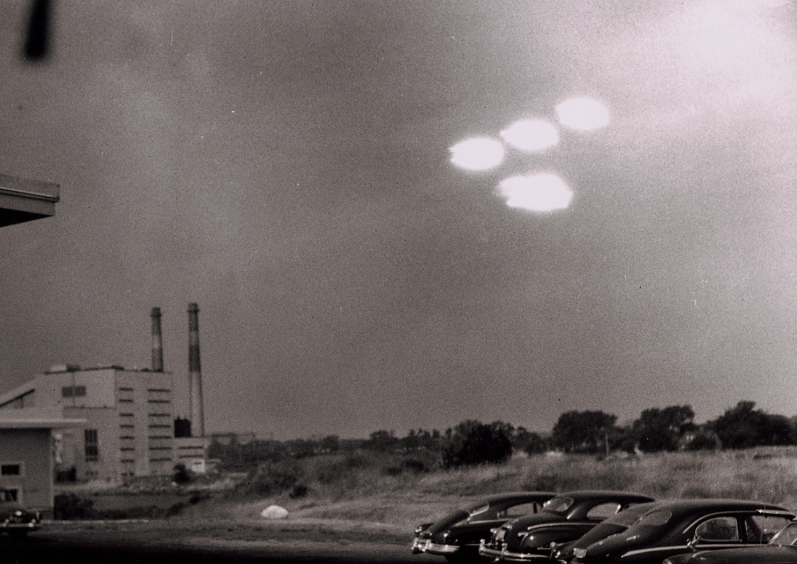
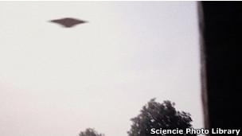

WASHINGTON — Un tranquilo 24 de junio de 1947, el piloto estadounidense Kenneth Arnold sobrevolaba a unas 20 millas al oeste del Monte Rainier, en el estado de Washington.
El historiador aficionado John Greenewald ha invertido cerca de dos décadas solicitándole al gobierno de Estados Unidos información desclasificada sobre los objetos voladores no identificados, mejor conocidos como ovnis.
Recientemente publicó más de 100.000 páginas de documentos de investigaciones internas de la Fuerza Aérea estadounidense sobre ovnis.
Te contamos cuáles son las cinco cosas que hay que saber sobre el Project Blue Book (Proyecto Libro Azul).
Fundado después de la Segunda Guerra Mundial, el proyecto tenía la intención de detener la propagación de inquietud pública sobre un número creciente de avistamientos de ovnis reportados, incluyendo algunos sobre la Casa Blanca o el Capitolio de Estados Unidos.
"Había mucha histeria entre el público y en esa época eso era una amenaza para los militares y el gobierno", dice Greenewald.
"No importaba si los ovnis eran extraterrestres o no, estaban causando pánico, así que (el gobierno) tenía que calmar los nervios de todo el mundo.
Aunque hoy el tema de los ovnis es fuente de frecuentes bromas, en los 40 y 50 eran tema de discusión en los niveles superiores del gobierno estadounidense.
"Se tomaba muy en serio en ese entonces", explica Rojas, "con los jefes de la Agencia Central de Inteligencia (CIA), afirmando públicamente que era un fenómeno real e incluso entonces congresista Gerard Ford decía que debían ser investigadas.
En 1966 un comité independiente de la Fuerza Aérea fue creado para profundizar alguno de los casos del Proyecto Libro Azul.
Ese grupo publicó tiempo después una reporte en el que aseguraba que no había evidencia de que hubiera alguna actividad de ovnis.
El proyecto fue cerrado oficialmente en 1969.
Aunque muchas fuentes creíbles, desde almirantes de la armada hasta pilotos civiles y militares, reportaron haber visto ovnis, la mayoría de los casos investigados por el proyecto fueron considerados causados por globos meteorológicos, gases de pantanos, eventos meteorológicos, e incluso inversiones de temperatura.
En Seattle, en el estado de Washington, en el noroeste de EE.UU, en abril de 1956, un testigo describió haber visto un "objeto redondo blanco, de la mitad del tamaño de la Luna, dando vueltas y vueltas", según los documentos.
los investigadores concluyeron que era un meteorito y cerró el caso.
En enero de 1961 en Newark, Nueva Jersey, una persona dijo haber visto un objeto de color gris oscuro "del tamaño de un jet sin alas". Ese objeto fue posteriormente considerado un avión que volaba en la zona.
De acuerdo con Greenewald y Rojas, más de 700 de los casos consignados en el proyecto no pueden ser explicados en última instancia por los investigadores. Muchos de ellos tenían insuficiente información.
Pero incluso algunos de los casos cerrados despiertan más preguntas que respuestas para los investigadores de ovnis.
En uno de los ejemplos, en 1964 un oficial de policía en Socorro, Nuevo México, emprendió una persecución después de haber visto una extraña aeronave volando en el cielo.
El oficial siguió a la nave –a la que describió como con una extraña insignia roja–, la vio aterrizar y vio que de ella salieron dos seres del tamaño de un niño. Dejó marcas de quemaduras y evidencias sobre el terreno.
"El Libro Azul las etiquetó como inexplicables, incluso después de todas estas décadas todavía no pueden explicar", dice Greenewald.
Aunque Greenewald ha acumulado gran cantidad de documentos del gobierno, dice que todavía hay muchos a los que él y el público no han accedido.
Aunque Greenewald ha acumulado gran cantidad de documentos del gobierno, dice que todavía hay muchos a los que él y el público no han accedido.
Otras entidades del gobierno de Estados Unidos –incluyendo a la CIA y a la Agencia de Inteligencia de Defensa (DIA)– también hicieron investigaciones sobre ovnis que no han sido publicadas, anota Greenewald.
"Yo creo que el Proyecto Libro Azul… es simplemente la punta del iceberg", señala, agregando que continuará solicitando más información al gobierno estadounidense.
"Hay secretos, detrás conspiraciones, y detrás hay escándalos todavía por salir", concluye Greenewald.
Aunque Greenewald ha acumulado gran cantidad de documentos del gobierno, dice que todavía hay muchos a los que él y el público no han accedido.
Una petición a la Agencia de Seguridad Nacional (NSA, por sus siglas en inglés) liberó cientos de páginas con información, pero tan sólo unas pocas palabras eran legibles en cada página, explica.
Otras entidades del gobierno de Estados Unidos –incluyendo a la CIA y a la Agencia de Inteligencia de Defensa (DIA)– también hicieron investigaciones sobre ovnis que no han sido publicadas, anota Greenewald.
La mayoría de los casos registrados en el Proyecto Libro Azul fueron desestimados por una comité investigador independiente.
"Yo creo que el Proyecto Libro Azul… es simplemente la punta del iceberg", señala, agregando que continuará solicitando más información al gobierno estadounidense. "Hay secretos, detrás conspiraciones, y detrás hay escándalos todavía por salir", concluye Greenewald.
"Siempre hay algo para ir detrás".